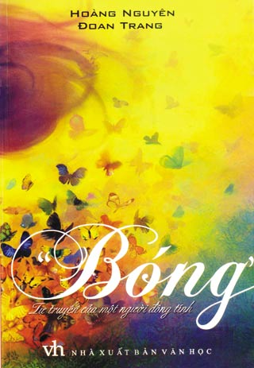

- Con ơi, Dũng ơi. Ngồi với mẹ đi con.
Khi sắp mất, mẹ nằm lặng lẽ trên giường. Thỉnh thoảng bà mở mắt nhìn tôi đi ra đi vào, rồi lại phều phào gọi con như thế. Tôi cứ quanh quẩn bên mẹ, tuyệt vọng, không biết làm gì hơn ngoài chờ đợi. Đột nhiên bà thở dài: “Không kịp rồi Dũng ạ”.
- Mẹ - Tôi nghẹn giọng - Không kịp gì hả mẹ?
- Không kịp. Mẹ đi mà mày chưa có vợ.
- Thôi, vợ con gì, mẹ. Con chả thiết vợ. Có mẹ là được rồi, con chả cần vợ.
Mẹ tôi im một lúc. Rồi bà bảo: “Ừ, thôi bật đĩa cải lương lên, hai mẹ con cùng nghe”.
Đến bây giờ, tôi vẫn không nhớ nổi tên vở cải lương cuối cùng mà hai mẹ con nghe với nhau. Tôi ngồi bên mẹ, nghẹn ngào bóp tay cho bà cụ. Bàn tay mẹ khô gầy, mỏng dính như đã mất nốt chút sinh khí cuối cùng. Những câu hát bên tai văng vẳng, lúc được lúc không.
Mẹ tôi ra đi nhẹ nhàng như người ta chìm vào giấc ngủ. Nhà có mười anh chị em nhưng lúc mẹ nhắm mắt, ngoài tôi ra, không ai về kịp để có mặt bên cụ.
Những ngày cuối cùng, bà thường gọi: “Dũng ơi, con đừng đi đâu cả. Con cứ ở đây, ở gần với mẹ. Mẹ đi lúc nào không biết đấy”. Tôi ứa nước mắt, quay đi giấu giọt lệ ầng ậc dưới mi: “Mẹ, mẹ đừng nói gở!”. Nhưng mẹ tôi đã linh cảm thấy cái chết của mình rồi: “Mẹ sắp đi đấy con ạ. Mẹ ngửi thấy mẹ có mùi của người sắp chết”.
Tôi nắm chặt tay, nhìn đăm đăm vào gương mặt mẹ. Ánh mắt bà như muốn nói điều gì. Không bao giờ tôi quên được ánh mắt ấy: đầy tình cảm, thương con tột cùng nhưng không nói ra được.
Mẹ thương tôi. Đó là lần duy nhất trong đời mẹ giục tôi lấy vợ. Bởi vì mẹ biết: Tôi là người đồng tính.
Chuyện về giới tính của thằng Dũng con bà Tốt, người ta vẫn đồn ầm ngoài chợ, nơi bà cụ bán hàng. Hết thằng này lại thằng kia đến ở cùng phòng với nó. Tiền hai mẹ con kiếm ra bao nhiêu, nó dốc hết vào bao giai, rửa chân, gội đầu nhổ tóc sâu cho giai, còn mẹ nó nằm còng queo góc nhà. Bà ốm nặng, nó đi với giai tít mít, lúc về thấy mẹ ngồi bốc cơm nguội nhai trệu trạo. Lần khác hàng xóm thấy bà cụ ngã nằm ngay cửa nhà, chắc là gượng dậy đi vệ sinh bị trúng gió.
Người ta đồn thế đấy! Nhưng mẹ cố nén chịu nỗi đau khổ ngấm ngầm để không bao giờ trách cứ tôi, cũng chẳng dằn vặt tôi về chuyện gia đình, vợ con.
Hơn bốn chục tuổi đầu, sống độc thân, tôi đã mất nhiều năm để quen với sự cô đơn mà số phận dành cho mình. Nhưng những ngày đầu, tôi vẫn khóc thầm khi nghĩ đến con đường dài trước mặt.
Rồi bước đến trước bàn thờ mẹ, thắp nén hương, định tâm sự với bà cụ vài câu cho nhẹ lòng, như một lời khoe của trẻ con: “Con đã ngộ ra rồi mẹ ạ, từ nay con sẽ sống thanh thản”.
Nhưng nhìn ảnh mẹ mờ mờ sau làn khói hương, nước mắt tôi lại tràn ra, giàn giụa. Tôi gục mặt xuống mép bàn thờ, nức nở: “Mẹ ơi! Con biết mẹ thương con lắm, nhưng bây giờ mẹ ở bên kia rồi. Mẹ có biết con khổ lắm không? Con không trách mẹ đâu, con không đổ lỗi cho mẹ đâu, nhưng con cô độc lắm, côi cút lắm mẹ ơi!...”.
Là một người đồng tính, lẽ ra tôi phải tự xác định là mình sẽ cô đơn mãi mãi. Lẽ ra tôi phải biết…
Đó là một đêm hè, trời lấm tấm sao. Bạn tôi độn ngực, nhễ nhại mồ hôi. Bình thường bạn chỉ thích thở than với tôi chuyện “thằng chồng” của mình: Đêm qua nó không chịu bế tôi lên giường, nó chê tôi béo.
Sáng nay nó bảo muốn lên đời cái ống nhổ (tiếng lóng chỉ điện thoại di động) dì ạ… Nhưng hôm nay thì khác, bạn chủ động hỏi tôi, vẫn bằng giọng the thé quen thuộc: “Cô vẩu sao buồn thế? Dũng sao thế hả Dũng?”.
Tôi không trả lời. Biết bắt đầu từ đâu với những câu chuyện luôn luôn giống nhau: bế tắc và không lối thoát.
Chúng tôi đi bên nhau, như tôi và Nhân đã từng đi. Tôi và bạn chỉ có nhau để rủ rỉ về chuyện “chồng”. Không phải “chồng con” vì những đứa trẻ không thể mọc ra từ chúng tôi.
Tỉ tê khuyên nhau cách giữ “chồng”. Cười rúc rích những chuyện bậy bạ. Và sụt sịt khóc cho những mối tình trai tuyệt vọng của mình. Giống như vô số câu chuyện thì thầm giữa cánh đàn bà với nhau. Chỉ có cái khác: Chúng tôi không phải đàn bà. Cũng như Nhân không phải đàn bà.
Đêm nay, tôi và bạn đi dưới hàng cây tối ven Hồ Gươm. Vỉa hè này chính là nơi tôi và Nhân từng đè nhau ra mà đánh lộn và gầm gào ầm ĩ trước con mắt chê cười của thiên hạ.
Phố Hàng Khay đây cũng là nơi mà, vào một ngày đầu hạ trong sáng, tôi gặp Nhân lần đầu tiên. Hoa bằng lăng tím ngát. Tôi đã yêu Nhân ngay từ lần đầu tiên ấy. Hôm đó, tôi cứ muốn nhìn Nhân mãi. Cuống quít không biết làm sao để được trò chuyện với Nhân lâu hơn, và đi xa hơn nữa, giữ Nhân luôn ở bên mình. Mãi mãi.
Cũng đã bao nhiêu buổi tối mùa đông, tôi khoác tay Nhân ra Hồ Gươm. Chúng tôi sà vào quán cóc nhỏ, uống chén trà nóng, ăn lát mực khô chấm tương ớt cay, xuýt xoa vì gió lạnh.
Bao nhiêu tối mùa hè, chúng tôi ngồi dưới bóng cây, nghe tiếng ve kêu ran ran trong vòm lá và nhìn đèn màu bập bùng đỏ trên mặt nước phía cầu Thê Húc.
Tất cả giờ đã thuộc về quá khứ. Quá khứ mới gần đây nhưng sẽ thành xa vời.
“Này nhá, tôi bảo dì nhá. Cái mồm vẩu cứ im thin thít thế, tôi ghét lắm. Chuyện dì với thằng Nhân thế nào?”. Tôi ngẩng nhìn và ngạc nhiên nhận thấy, trong một khoảnh khắc, nét mặt bạn đầy đau khổ.
Bạn như già đi hàng chục tuổi, chẳng còn chút gì hình ảnh người đàn ông kẻ mắt xanh đánh má hồng, ngồi bặm môi hì hục viết ra giấy những lời tôi dặn dò để mang về nhà đối phó với “chồng”, vừa viết vừa rền rĩ: “Ôi, ôi, sao mà nó làm khổ tôi thế này, cái thằng này…”.
Lúc ấy, dù biết là bạn đang khổ sở thật, tôi vẫn phì cười thấy bạn ngộ nghĩnh vô cùng. Hình như chỉ đến bây giờ, tôi mới chợt nhận ra nỗi buồn triền miên bên trong con người bạn. Và tôi xót xa nghĩ tới một ngày cả bạn và tôi sẽ thật sự già. Tôi hình dung ra những ngày tháng hai ông già cô đơn, lủi thủi đếm từng ngày trời bắt sống. Không sức khỏe. Không gia đình. Không con cái. Không còn nhu cầu gì cả.
Nhân ư? Đêm đó, chúng tôi đi chơi khuya, tới tận một giờ sáng. Tôi đã rất vui sướng. Bao giờ tôi cũng vui sướng như thế khi được ở bên người mình yêu và run run cảm nhận rằng hình như người đó cũng có cảm tình với mình.
Trở về nhà, tôi lên giường nằm ôm lưng, vuốt tóc Nhân. Nhân im lặng, rồi đột nhiên Nhân nói đến chuyện bố mẹ giục về quê lấy vợ, cũng đã đến lúc phải có thằng cu cho các cụ bế rồi. Vụt một cái, tôi nhận ra mọi tình cảm âu yếm của Nhân dành cho tôi chỉ là ảo ảnh. Giữa chúng tôi, sẽ không có ngày mai!
Sau cuộc cãi vã, tôi chạy vào phòng tắm, gục mặt vào tường và nức nở thành tiếng. Vẫn giữ thói quen soi gương, ngay cả khi đang khóc, tôi quay vào gương để thấy đôi mắt đỏ ngầu nhìn lại mình, đầy nước. Lỗi là tại tôi, không hiểu sao tôi cứ mơ mộng như thế? Sao phải đến lúc ấy tôi mới chịu nhận ra rằng giữa chúng tôi sẽ không bao giờ có ngày mai?
Tôi ngồi bệt xuống vỉa hè, trông ra Bờ Hồ lấp lánh đèn màu. Bạn tôi ngồi xổm bên cạnh, vẫn ngại bẩn quần: “Làm sao? Dì với nó lại múc nhau à?”. “Nó lại đòi về quê lấy vợ” - tôi đáp. “Nó bỏ tôi nó đi rồi”. “Đi với gái?”. “Không biết”.
Đêm khuya. Chúng tôi lang thang trên những con phố đông người của khu trung tâm Hà Nội. Các cửa hiệu đã tắt đèn. Dãy Hàng Ngang – Hàng Đào tối như một thị trấn đêm chiến tranh, chỉ còn được soi sáng bằng những luồng đèn xe máy loang loáng.
Tôi lại nhớ đến Nhân. Chúng tôi đã từng đi bên nhau như thế. Bao lần rồi Nhân nhỉ? Nhân từng chỉ vào những nhà ống lụp xụp kia mà nói rằng: “Ở đây thích thế, Dũng nhỉ? Toàn nhà cổ”.
“Nó đi rồi nó lại về thôi” - bạn tôi nói. “Mấy lần trước cũng thế mà”.
“Nhưng có về với tôi thì rồi nó cũng lại bỏ đi thôi”.
“Thôi thì có duyên sẽ gặp. Cái phận bọn mình là thế rồi Dũng ạ”.
Bạn tôi chỉ nói vậy thôi. Hiểu được bản thân để chấp nhận “cái phận của mình” có bao giờ là chuyện dễ? Với những gì đã qua, chẳng phải tôi cũng đã mất hơn hai mươi năm để ngộ ra rằng sự cô đơn là “cái phận” của những người đồng tính đó ư?
Nhưng không chỉ có sự cô đơn. Tôi luôn hiểu rất rõ rằng người đồng tính chúng tôi là những số phận bất hạnh.
Bất hạnh, vì chúng tôi sinh ra như những người bình thường, chỉ khác duy nhất ở chỗ chúng tôi có khuynh hướng luyến ái khác mọi người. Và đó là nguồn gốc của mọi khổ đau.
Bất hạnh, vì chúng tôi yêu mà không bao giờ được đáp lại, chúng tôi hy sinh mà không bao giờ được bù đắp, chúng tôi khao khát mà không bao giờ được thỏa mãn, cuối cùng phải chấp nhận một cuộc sống diệt dục.
Bất hạnh, vì chúng tôi không được (và không dám) sống với đúng con người thật của mình. Chúng tôi phải giấu giếm, kiềm chế, thậm chí đè nén bản thân. Và khi không giấu nổi, hoặc không muốn giấu nữa, chúng tôi sẽ vấp phải sự kỳ thị rất vô hình của đồng loại - những cái nhìn tò mò, ghê sợ, thương hại v.v.
Bất hạnh, vì chúng tôi cô đơn suốt đời. Chúng tôi lủi thủi từ khi còn là những đứa trẻ bị trêu chọc, dò xét, uốn nắn, kìm kẹp, sửa đổi. Chúng tôi sống thu mình khi là những thanh niên đầy sức sống, đầy khao khát yêu thương bị nén lại. Chúng tôi cô độc khi đầu đã bạc, nhìn xung quanh thấy bè bạn cùng trang lứa đều đã con đàn cháu đống.
Đồng tính hoàn toàn không phải là lựa chọn đối với chúng tôi, không ai trong giới chúng tôi muốn như vậy. Nếu là lựa chọn, tôi ước sao được là người bình thường– dù là đàn ông hay phụ nữ.
Giờ đây, khi mọi chuyện điên rồ nhất đã qua, tôi muốn kể về những tháng ngày ấy. Và tôi muốn nói thêm nhiều điều nữa về thế giới của chúng tôi - những người đồng tính – hy vọng mọi người hiểu chúng tôi hơn...